── Attaching core tidyverse packages ──────────────────────── tidyverse 2.0.0 ──
✔ dplyr 1.1.4 ✔ readr 2.1.5
✔ forcats 1.0.0 ✔ stringr 1.5.1
✔ ggplot2 3.5.1 ✔ tibble 3.2.1
✔ lubridate 1.9.3 ✔ tidyr 1.3.1
✔ purrr 1.0.2
── Conflicts ────────────────────────────────────────── tidyverse_conflicts() ──
✖ dplyr::filter() masks stats::filter()
✖ dplyr::lag() masks stats::lag()
ℹ Use the conflicted package (<http://conflicted.r-lib.org/>) to force all conflicts to become errors
Rows: 200 Columns: 7
── Column specification ────────────────────────────────────────────────────────
Delimiter: ","
chr (3): sex, smoker, region
dbl (4): age, bmi, children, charges
ℹ Use `spec()` to retrieve the full column specification for this data.
ℹ Specify the column types or set `show_col_types = FALSE` to quiet this message.Categorical data
Visualizations and contingency tables
Housekeeping
- Problem set 2 due tonight! Please be sure to submit both written and knitted HTML parts.
- Office hours today 2-4pm
- Reminder about TA hours
Categorical data
Recall that a variable is either numerical or categorical
Categorical variables are variables that can take one of a limited (usually fixed) number of possible values, known as levels
- Represent data that can be divided into groups
Two types:
Ordinal: the levels have a special ordering
Nominal: the levels don’t have an ordering
- We will almost exclusively treat our categorical variables as nominal in this class
Examples and non-examples?
Insurance data
Univariate EDA
If we are interested in understanding the distribution of a single categorical variable, it is common to:
Display a frequency table, which is a table of counts of each level
# A tibble: 2 × 2
smoker n
<chr> <int>
1 no 155
2 yes 45Create a bar plot, where different levels are displayed on one axis and the counts are portrayed on the other
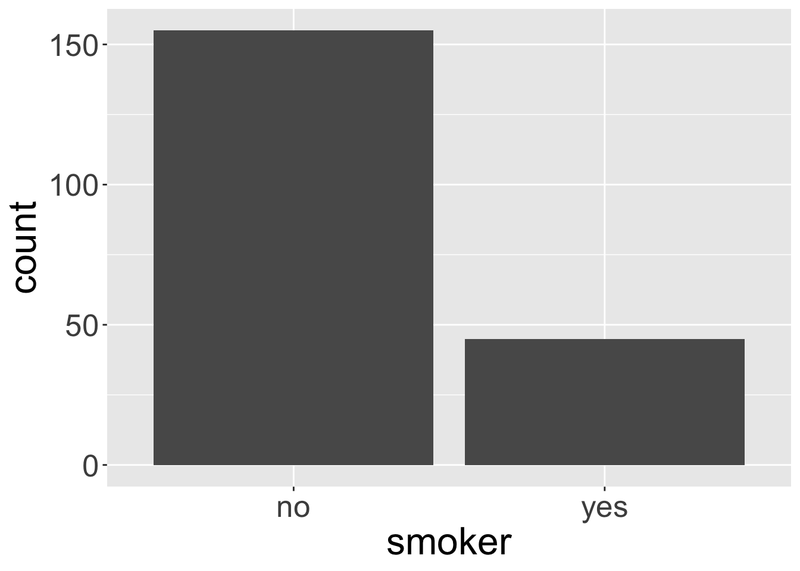
How do bar plots differ from histograms?
Bivariate EDA
Perhaps we are interested in examining the distribution of two categorical variables at the same time
Summarize the distribution using a two-way table known as a contingency table:
Each value in the table counts the number of times a particular combination of variable 1 and variable 2 levels occurred in data
`summarise()` has grouped output by 'smoker'. You can override using the `.groups` argument.Contingency table smoker female male no 87 68 yes 17 28
How can we use contingency table to obtain the distribution of just one of the variables?
Dodged bar plot
The dodged bar plot directly converts the contingency table to a visualization.
| smoker | female | male |
|---|---|---|
| no | 87 | 68 |
| yes | 17 | 28 |
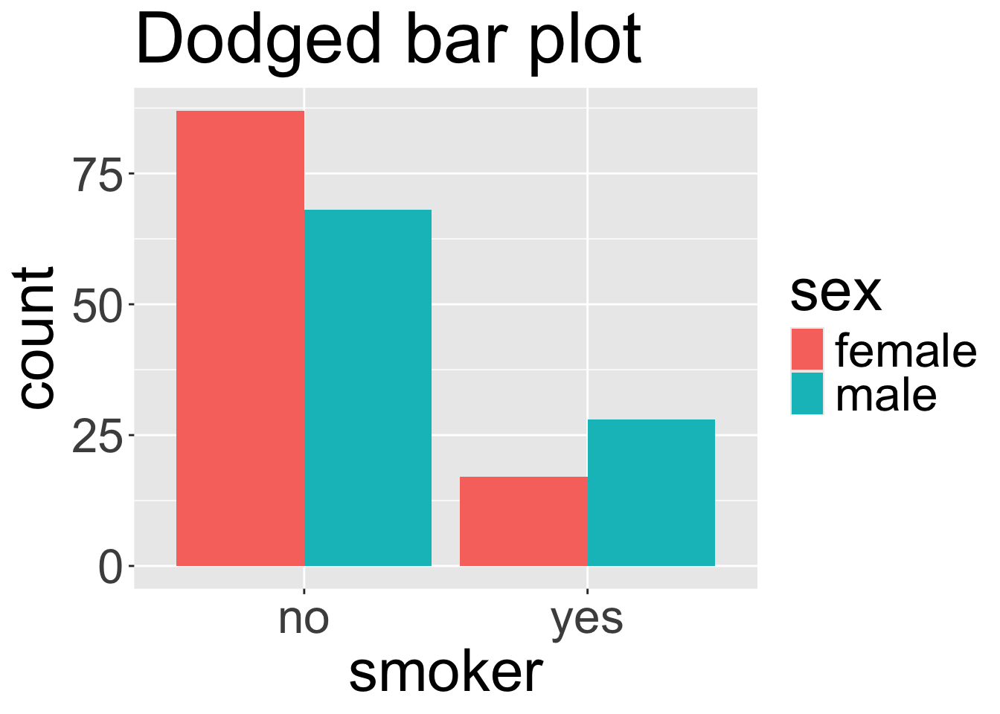
Stacked bar plot
The stacked bar plot looks at the counts either row-wise or column-wise.
| smoker | female | male |
|---|---|---|
| no | 87 | 68 |
| yes | 17 | 28 |
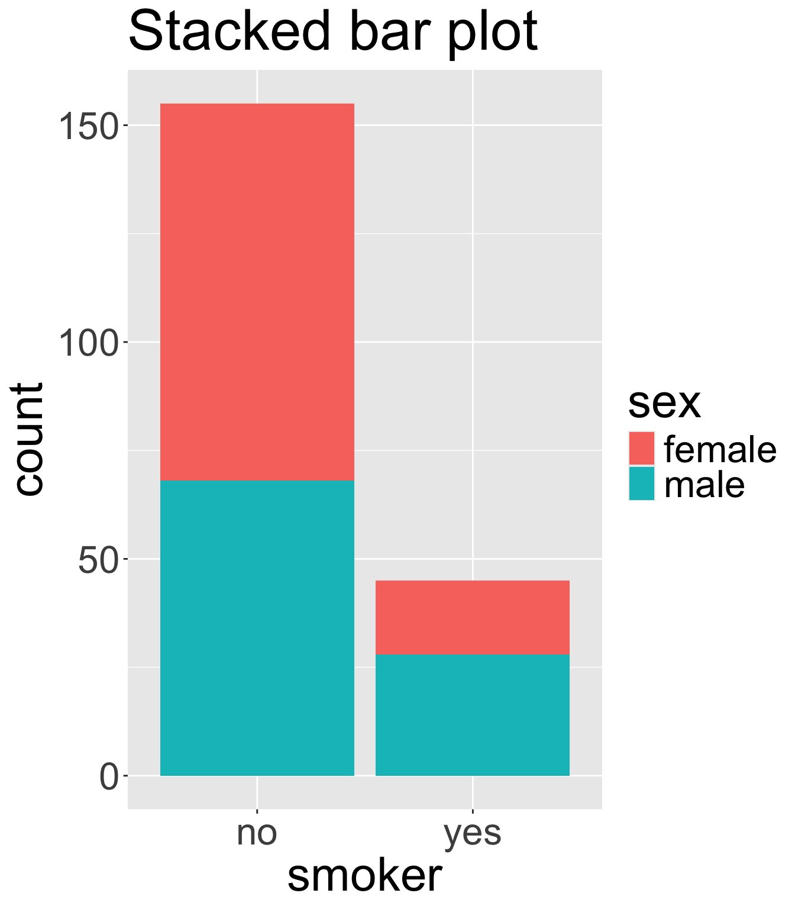
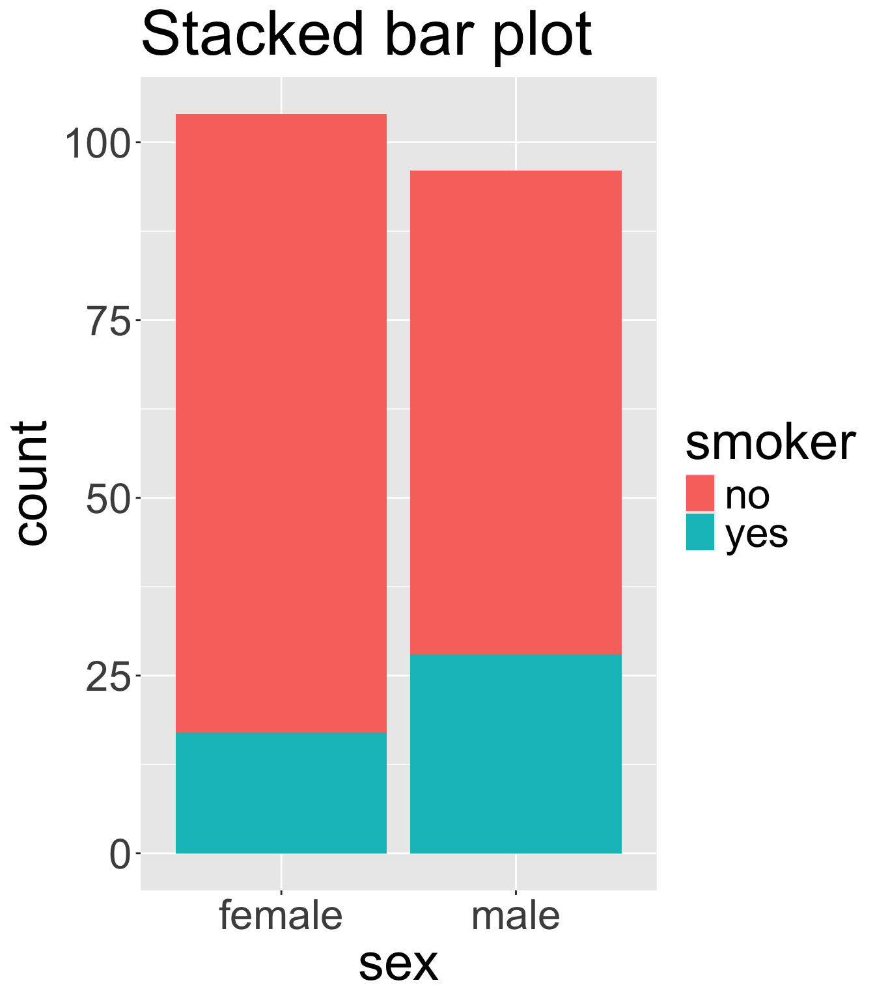
Proportions
Can convert the contingency table to proportions row-wise or column-wise to obtain the fractional breakdown of one variable in another.
| smoker | female | male |
|---|---|---|
| no | 87 | 68 |
| yes | 17 | 28 |
`summarise()` has grouped output by 'smoker'. You can override using the
`.groups` argument.| smoker | female | male |
|---|---|---|
| no | 0.561 | 0.439 |
| yes | 0.378 | 0.622 |
- What does the quantity 0.378 represent?
- If we take the proportions row-wise, does each row need to sum to 1?
- If we take the proportions row-wise, does each column need to sum to 1?
Proportions (cont.)
Set up how to find the column-wise proportions using our contingency table
| smoker | female | male |
|---|---|---|
| no | 87 | 68 |
| yes | 17 | 28 |
Standardized bar plot
The standardized bar plot visualizes these row-wise or column-wise proportions.

Choosing a bar plot
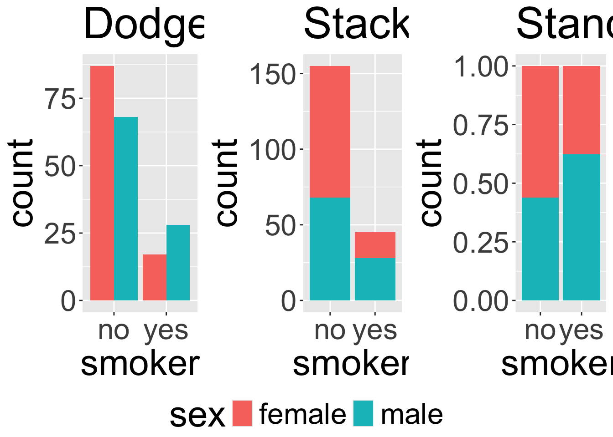
- Using any of the plots, do you believe the smoker status and sex are associated?
- When might you prefer to use the stacked, dodged, or standardized bar plot?
Factoring
Live code
- Bar plots
- Aesthetics: fill, shape
- Faceting
Bar plot (univariate)
ggplot(data = insurance, mapping = aes(x = smoker)) +
geom_bar()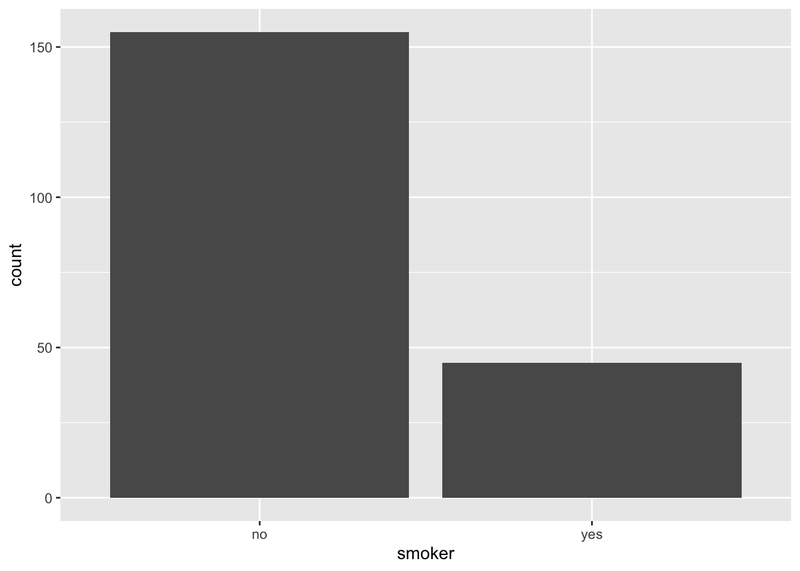
Note: if your data are already in the form of frequency table, we should use geom_col() instead!
Bivariate bar plots
ggplot(insurance, aes(x = smoker, fill = sex)) +
geom_bar(position = "dodge") 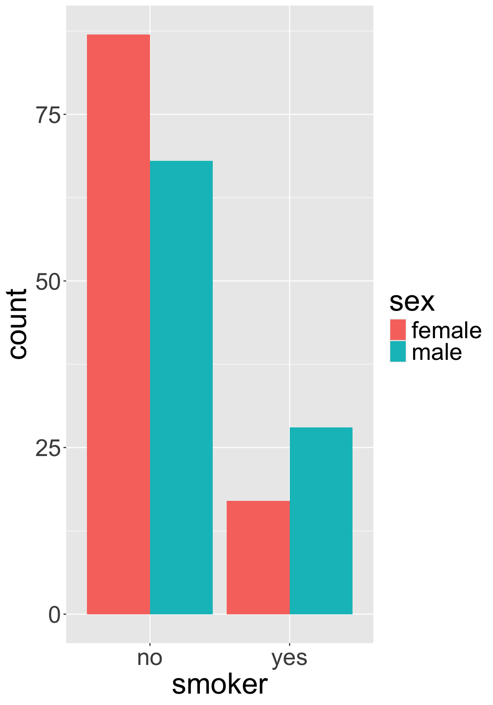
ggplot(insurance, aes(x = smoker, fill = sex)) +
geom_bar(position = "stack") # this is default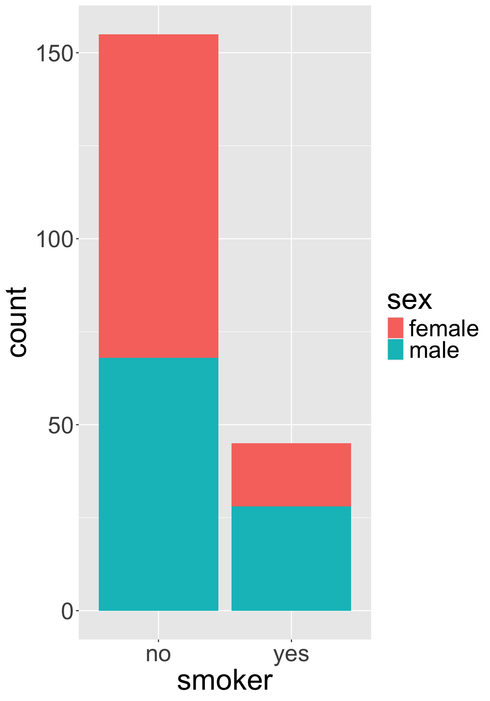
Bivariate bar plots (cont.)
ggplot(insurance, aes(x = smoker, fill = sex)) +
geom_bar(position = "fill")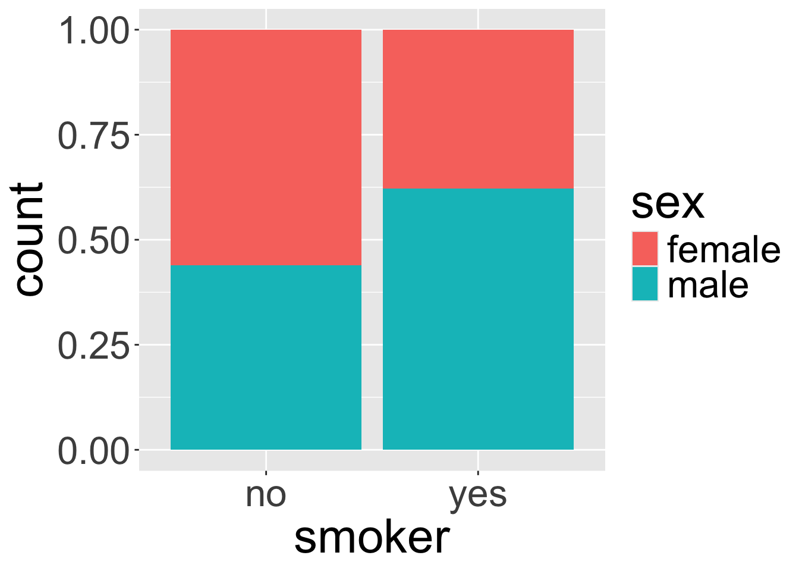
How might we make the bars horizontal instead of vertical?
Visualizing numerical and categorical
ggplot(data = insurance, mapping = aes(x = bmi, y = charges, col = smoker)) +
geom_point() 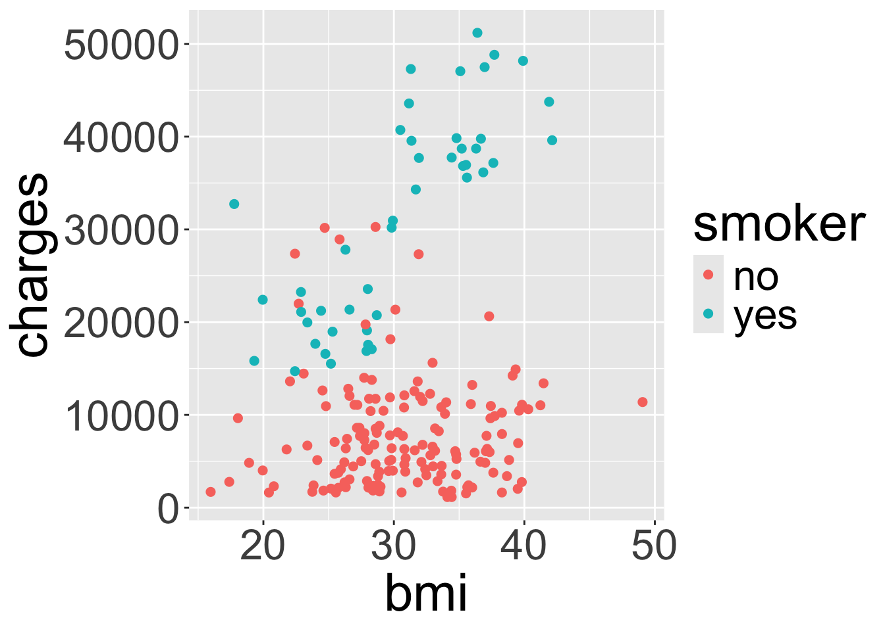
What do you notice about the legend for color?
Aesthetic: shape
ggplot(data = insurance, mapping = aes(x = bmi, y = charges, shape = smoker)) +
geom_point()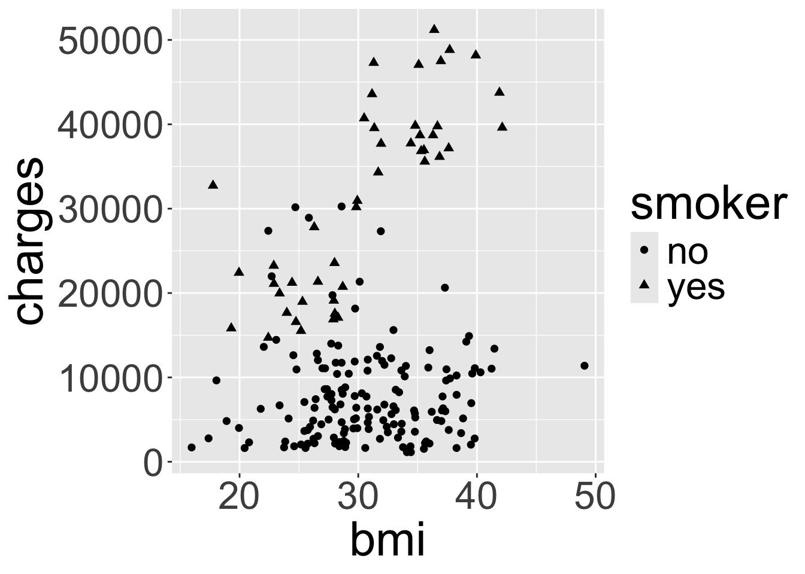
facet_wrap()
Faceting is used when we want to split a particular visualization by the values of another (categorical) variable
ggplot(data = insurance,
mapping = aes(x = bmi)) +
geom_histogram() +
facet_wrap(~ smoker) `stat_bin()` using `bins = 30`. Pick better value with `binwidth`.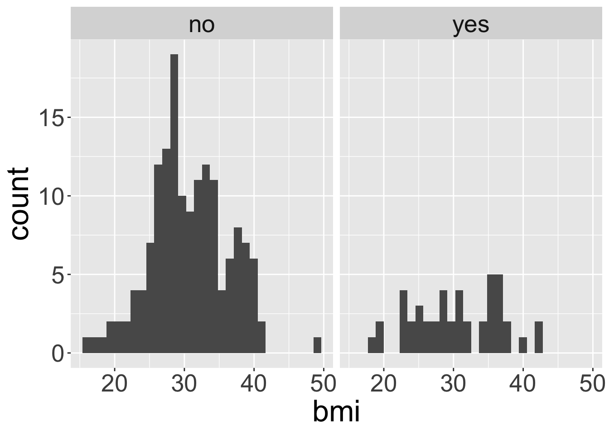
ggplot(data = insurance,
mapping = aes(x = bmi)) +
geom_histogram() +
facet_wrap(~ smoker, scales = "free_y")`stat_bin()` using `bins = 30`. Pick better value with `binwidth`.
facet_grid()
ggplot(data = insurance, mapping = aes(x = bmi)) +
geom_histogram() +
facet_grid(sex ~ smoker)`stat_bin()` using `bins = 30`. Pick better value with `binwidth`.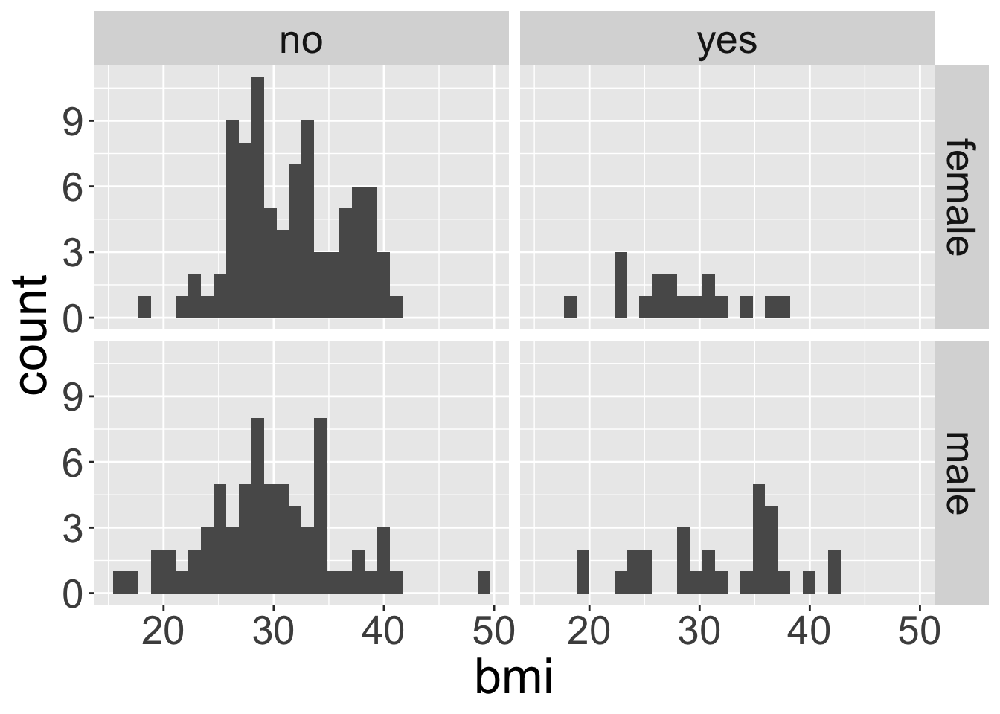
Side-by-side box plots
ggplot(data = insurance,
mapping = aes(x = smoker, y = bmi)) +
geom_boxplot()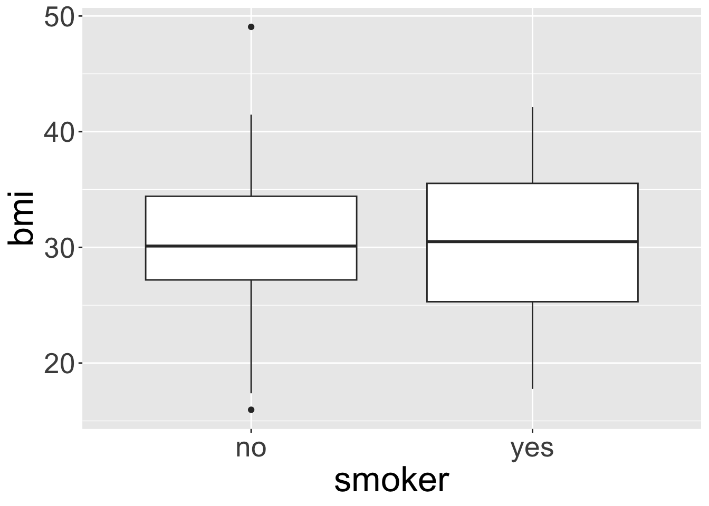
Like faceting, but only for box plots.